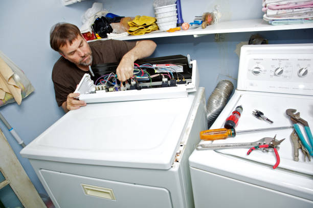

Start issues
Appliance not working?We test power, switches, and controls.
If the appliance will not start, clicks without starting, or does nothing when you press start, we diagnose the full start circuit before replacing parts.
Power checks
Outlet, breaker, cord, and supply verification.
Door and switch testing
We confirm the appliance can safely begin the cycle.
Clean repair
Clear estimate before any work starts.
What we check
The main reasons an appliance will not start
Start failures can come from simple power issues or deeper control problems. We test the start path first so you get the right repair plan.
Power supply and wiring
We rule out outlet, breaker, cord, and wiring faults
first.
Door switch system
If the appliance cannot confirm the safety circuit, it may
refuse to start.
User interface and start command
We test buttons, selectors, and whether the board
receives the command.
Main control response
If the board fails to trigger the cycle, we confirm
that before repair.
Helpful note
Tell us whether the appliance has power, whether you hear a
click or hum, and whether the panel lights or controls respond. That helps us narrow the likely
starting fault quickly.
Our process
A clean workflow for turn-on repair
We verify power, confirm the safety circuit, test the controls, and repair only what the appliance actually needs.
1. Inspect
We test power, lock status, and control inputs.
2. Confirm
We isolate the exact point where the start sequence fails.
3. Repair
We complete the needed repair with tidy workmanship.
4. Verify
We confirm the appliance starts and responds correctly
What you get
Clear estimate, targeted repair, and an appliance that starts the
right way
Common causes
What usually causes a turn-on problem
Tripped breaker or outlet issue
Power problems can look like a dead appliance even when the
appliance is fine.
Faulty safety switch
The control may refuse to begin the cycle if the switch is not
confirmed.
Faulty start button or UI
The appliance may power on but never actually launch the cycle.
Control board issue
The board may not send the start command even when inputs look
normal.
Timer or selector fault
A bad selector can interrupt the start sequence before the
cycle begins.
Wiring or harness issue
Loose or damaged wiring can break the start circuit
completely.
Help
Quick answers about turn-on repair
Yes. The user interface can light up while the start
circuit, safety switch, or control board still fails.
Yes. On many acs, the cycle will not begin unless
the control confirms that the required safety switch is engaged.
It is better to stop and check the problem. Repeated
attempts can stress a weak lock or control component.
Tell us whether the display turns on, whether you hear
a click or hum, and whether the appliance responds at all when you press start.